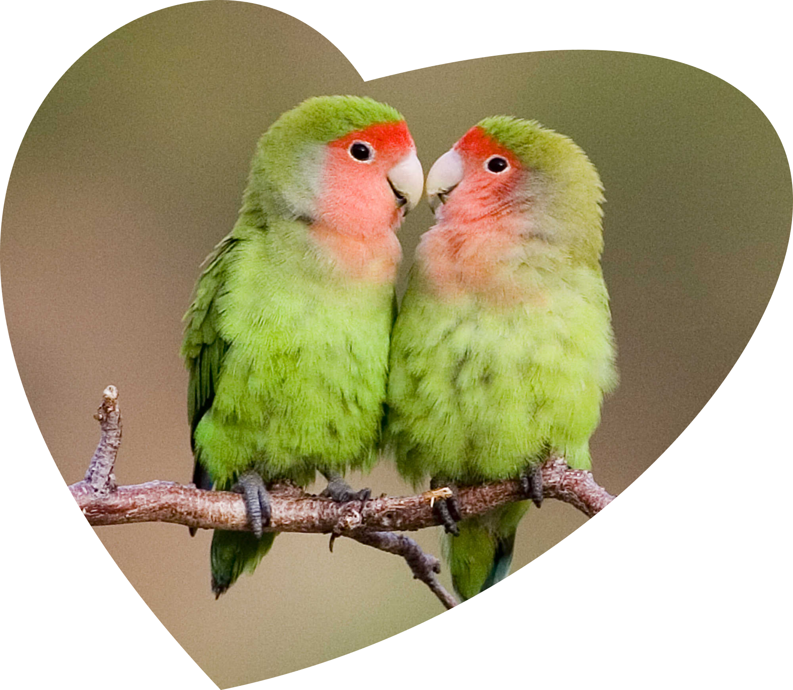

Попугаи
Имеют множество оттенков и цветов!
 Входят в топ самых умных птиц!
Входят в топ самых умных птиц!
Входят в топ самых умных птиц!
Они умеют чувствовать ритм, а не бездумно двигаются под музыку.
Если сменить композицию, то и темп движений птицы изменится.
Даже после периода размножения
самка и самец остаются вместе.
Они заботятся друг о друге,
помогают найти еду и спят рядом.
